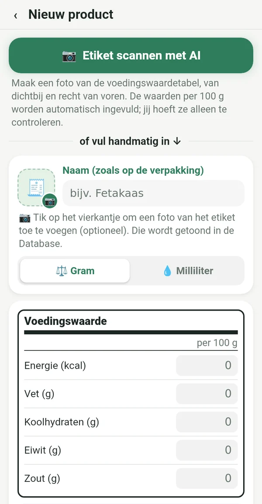
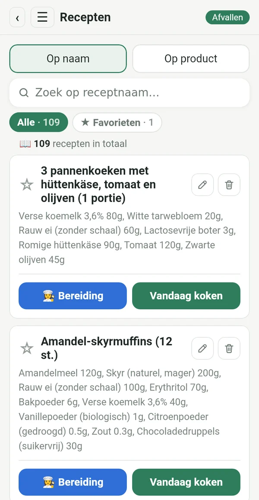
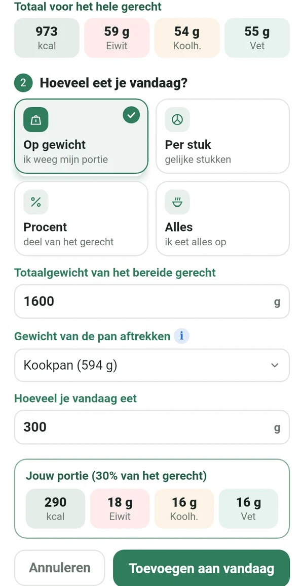
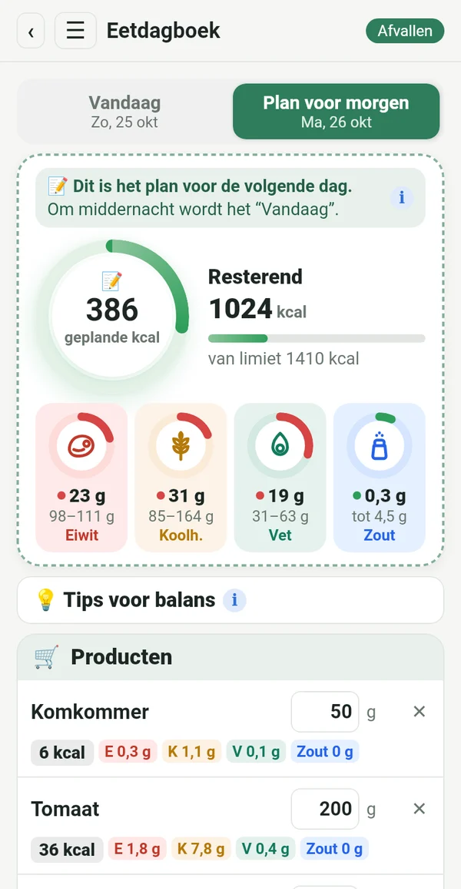
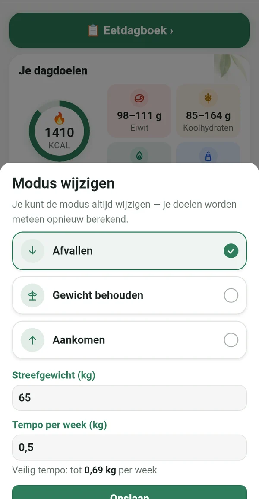
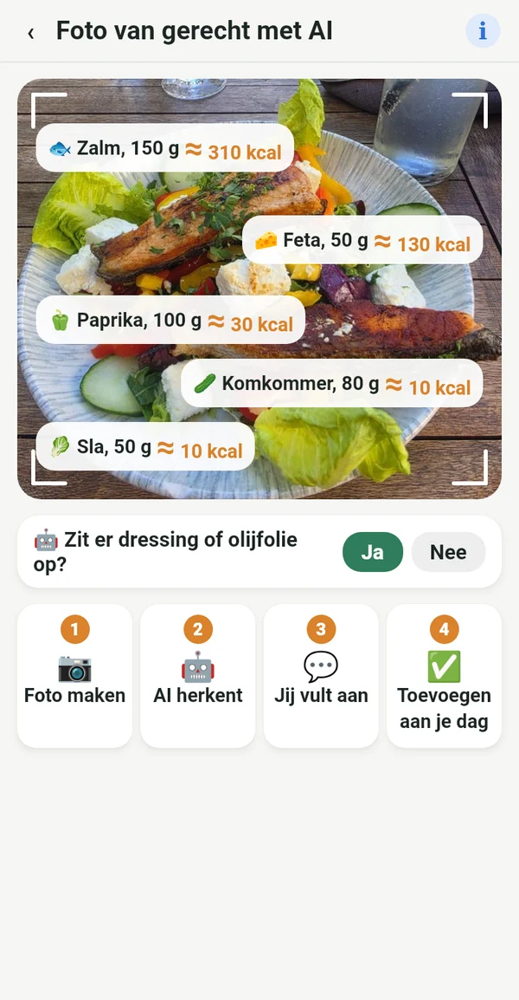

Alles wat je nodig hebt, niets overbodigs

Van het etiket, niet uit andermans database
Neem de waarden per 100 g over van de verpakking of maak gewoon een foto van het etiket. De cijfers kloppen met wat je echt eet.
📷 Een AI-foto van het etiket vult de velden voor je in
Jouw digitale kookboek
Recepten uit oma’s schrift, uit de kookboeken op de plank en uit je favoriete groepen, allemaal op één plek. Eén keer invoeren, altijd gebruiken.

Je exacte portie uit de hele pan
Weeg het klaargemaakte gerecht samen met de pan. Macrolia trekt de pan eraf en berekent precies hoeveel je hebt gegeten.

Plannen, boodschappen doen, eten
Vandaag al zet je erin wat je morgen eet. Je koopt alleen wat nodig is, en om middernacht wordt het plan je dag.

Afvallen, gewicht behouden of aankomen
Bereik je je doel, dan stap je over op ‘Gewicht behouden’. Verandert je leven, dan wissel je gewoon van modus. Je daglimiet volgt de Mifflin-St Jeor-formule en klinische richtlijnen, in een veilig tempo.

Ook buiten de deur weet je wat je eet
Maak een foto van je bord en AI herkent wat erop ligt. De waarde is een schatting, gemarkeerd met ≈. Beter een schatting dan niets.
Calorieën uit beweging
Via Health Connect, vanaf je telefoon, horloge of fitness-app. Jij kiest hoeveel er bij je limiet komt.
Gewicht, grafiek, rapport
Gewichtsgrafiek, voor-en-nafoto’s alleen voor jou en een rapport in pdf en Excel.
Balanstips
Korte tips als eiwit of vet buiten je doel valt. Het helpt, het commandeert niet.
Voor iedere vrouw die op koers wil blijven
Jojoën komt niet van het dieet. Het komt als je stopt.
Na de baby pak je je ritme weer op.
Leeftijd is geen reden om op te geven.
Ook in een restaurant weet je wat je bestelt.
Wie het plan precies volgt, krijgt een precies resultaat.
Jouw gegevens zijn van jou
Alles blijft op je telefoon. Geen account, geen advertenties, geen tracking. Een foto voor AI-analyse wordt alleen voor de berekening verstuurd en niet bewaard.
Abonnement
Abonnement per maand of per jaar, allebei met 7 dagen gratis. Op elk moment op te zeggen in Google Play.
In 14 talen, met een licht en een donker thema.
Vragen
Wanneer komt de app uit?
We bereiden de lancering in Google Play voor. Mail ons en we laten het je weten zodra hij klaar is.
Is er een iPhone-versie?
Voorlopig alleen voor Android. Een iPhone-versie staat voor later gepland.
Waarom is er geen barcodescanner?
Barcodedatabases worden door gebruikers gevuld en zijn vaak fout of verouderd. In Macrolia komt elke waarde van het etiket, daarom kloppen de cijfers.
Hoeveel AI-foto’s kan ik maken?
Tot 100 foto’s per maand, voor etiketten en gerechten samen.